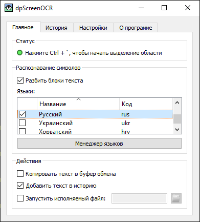

dpScreenOCR
dpScreenOCR — это программа для распознавания текста на экране. Благодаря Tesseract она поддерживает более 100 языков и может разбивать независимые блоки текста, такие как колонки. Прочитайте руководство пользователя для получения инструкций по установке, настройке и использованию.
Загрузите версию 1.5.0 (изменения, лицензия):
Внесите вклад, поучаствовав в переводе или разработке.